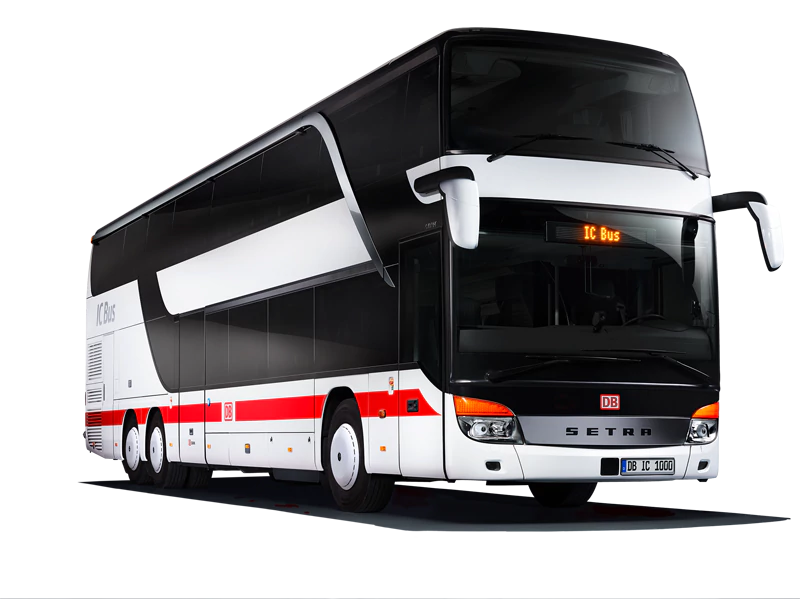

Artikel
This article is about road vehicles designed to car
A bus (archaically also omnibus,[1] multibus, motorbus, autobus) is a road vehicle designed to carry many
passengers. Buses can have a capacity as high as 300 passengers.[2] The most common type of bus is the
single-decker rigid bus, with larger loads carried by double-decker and articulated buses, and smaller loads
carried by midibuses and minibuses; coaches are used for longer-distance services. Many types of buses, such
as city transit buses and inter-city coaches
Tabel
|
bus reis |
prive bus |
| mandag |
12 |
14 |
65 |
87 |
| dinsdag |
9 |
13 |
50 |
59 |
| woensdag |
11 |
16 |
55 |
76 |